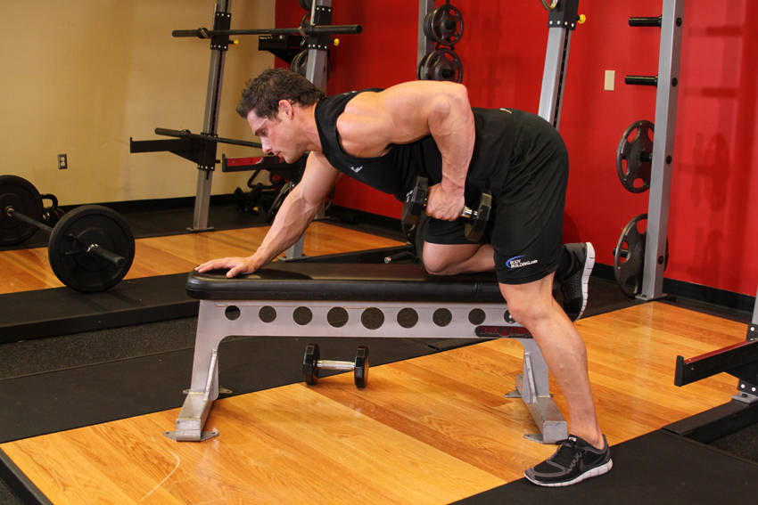

- Choose a flat bench and place a dumbbell on each side of it.
- Place the right leg on top of the end of the bench, bend your torso forward from the waist until your upper body is parallel to the floor, and place your right hand on the other end of the bench for support.
- Use the left hand to pick up the dumbbell on the floor and hold the weight while keeping your lower back straight. The palm of the hand should be facing your torso. This will be your starting position.
- Pull the resistance straight up to the side of your chest, keeping your upper arm close to your side and keeping the torso stationary. Breathe out as you perform this step. Tip: Concentrate on squeezing the back muscles once you reach the full contracted position. Also, make sure that the force is performed with the back muscles and not the arms. Finally, the upper torso should remain stationary and only the arms should move. The forearms should do no other work except for holding the dumbbell; therefore do not try to pull the dumbbell up using the forearms.
- Lower the resistance straight down to the starting position. Breathe in as you perform this step.
- Repeat the movement for the specified amount of repetitions.
- Switch sides and repeat again with the other arm.
This exercise appears in Programmd training programs. Take the quiz to find one for your gym.
Find your program